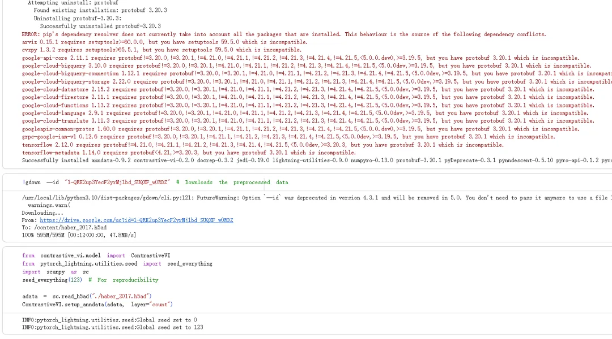
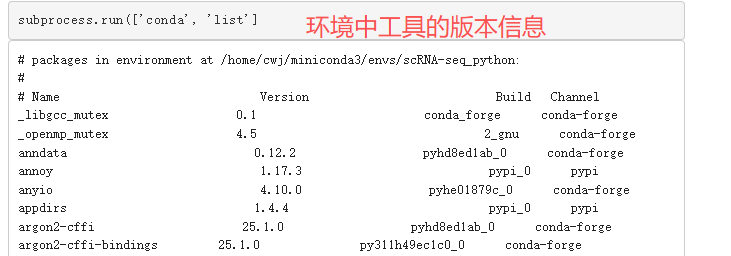
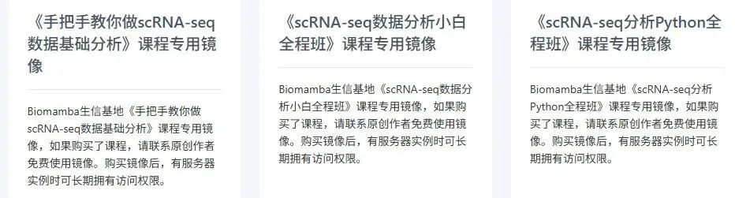
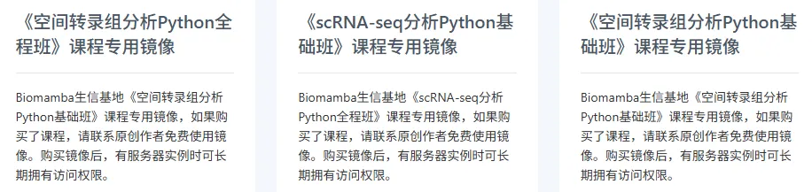

一个包的官方教程里居然都有Error
原文：https://mp.weixin.qq.com/s?__biz=MzAwMzIzOTk5OQ==&mid=2247534978&idx=1&sn=fd5e5f25883faba6717bfeb2dc858b53&chksm=9b3c30d2ac4bb9c4d82d88b75764254152098fe99d1d5e90d61f33ac2d76586db36f1563b7cf#rd 合集：漫谈胡侃
相信各位和Biomamba一样，经常会有糟糕的学习体验，今天又踩雷了。contrastiveVI是一种生成模型，旨在从一组“目标”细胞（例如来自患有特定疾病的样本）中分离出特定的变异因素，与一组“背景”细胞（例如来自健康样本的细胞）中共享的变异因素区分开来[1]。本想着给大家做个教程，丰富一下生信基地的python单细胞生态。谁曾想官方的实例中居然还包含error。作者都解决不了依赖关系，那我们读者不是更困难 。
。

我当然可以一个个的查询每行命令无法运行的解决办法、解决各软件的版本依赖问题，只是这样有些索然无味。作者没有义务服务于用户，但对于我们来说，一个包的优秀程度不单限于其背后支撑的文章、强大的功能、计算性能，还在于它是否便于安装、是否有能让其他用户方便落地的教程。所以很遗憾，这个优秀的作品不能为我所用。我们在制作教程时也会留意大家是否能“跟着跑通”，因此我们做了几方面的努力：
1、用Rmarkdown、Jupyter等具有编译/标记功能的语法或者IDE去制作教程，而不是简单的往公众号里复制，确保每个教程至少在我们的手里可以跑通。
2、教程结尾都会附上版本环境信息与测试文件，例如挑战用Python分析一百万个单细胞数据的文末。甚至我们还做过Biomamba的单细胞分析环境大公开！

3、针对共计251小时视频教程，保姆级单细胞&空转教学，我们还封装打包了镜像，能够做到开箱即用，感兴趣的小伙伴可以联系我们领取。

[1]https://github.com/suinleelab/contrastiveVI
[2]https://colab.research.google.com/drive/1z0AcKQg7juArXGCx1XKj6skojWKRlDMC?usp=sharing

如何联系我们

 留一个领取资料、开箱即用的单细胞分析镜像的微信号[Biomamba_zhushou]，方便各位随时交流。同时我们也构建了交流群矩阵，欢迎大家入群讨论。
大家可以阅读完这几篇之后添加给生信入门初学者的小贴士
没有检索，就没有发言权
留一个领取资料、开箱即用的单细胞分析镜像的微信号[Biomamba_zhushou]，方便各位随时交流。同时我们也构建了交流群矩阵，欢迎大家入群讨论。
大家可以阅读完这几篇之后添加给生信入门初学者的小贴士
没有检索，就没有发言权
已有生信基地联系方式的同学无需重复添加

 您点的每个赞和在看，我都认真当成了喜欢
您点的每个赞和在看，我都认真当成了喜欢